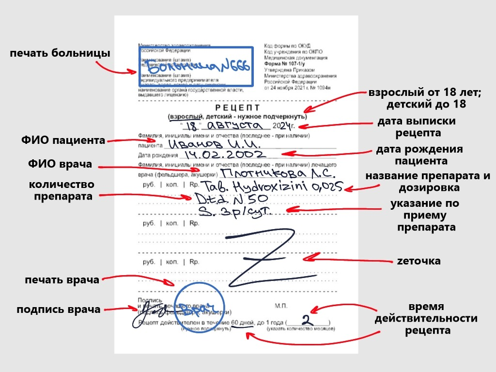

Как происходит заполнение бланка

Нам необходимы две хорошие платные программы, а именно простановка печатей и подделка подписей. Для начала проставляются печати: Печать врача — круглая печать с надписью в центре врача выдавшего рецепт и фио врача по кругу. Печать "для рецептов" — круглая - 40 мм в диаметре, треугольная - 39х45(длина одной стороны треугольника) мм. По краю печати - наименование медицинской организации и её город. По центру - надпись "Для рецептов". Печать медицинской организации — для бюджетных организаций, больниц, поликлиник - пишем только наименование в таком виде, в котором оно написано у них на сайте. Ниже строкой - адрес больнички, еще строкой ниже - её телефон. Собственно, всё - больше с бюджетных организаций не просят никакой инфы на штампе. Для частных клиник всё немножечко сложнее.
Далее идёт заполнение отпечатанного бланка ручкой: Данные о пациенте — ваша фамилия имя отчество, можно любое, но лучше ваше, возраст, можно тот, на который вы выглядите и Ф.И.О. Лечащего врача, такое же как и на печати. Первая строка - сокращение "рецепт (Rp.)", международное наименование на латыни в родительном падеже (эта часть легко гуглится, многие сайты предлагают шпаргалки для медиков по выписыванию препаратов), дозировка в граммах (и только в граммах, никаких милиграммов или чего-то еще). Вторая строка - скоращение "выдай (D. t. d.), количество таблеток (кратное числу таблеток в упаковке, если хотим одну упаковку - то пишем количество таблеток в одной упаковке, хотим три - пишем, соответственно, не 50, а 150), форма выпуска (в таблетках - in tab., в капсулах - in cap., в драже - in drage, в растворе для инъекций - in sol.). Третья строка содержит указание для пациента. После S. пишем то, как и по какой схеме врач мог бы выписать вам рецепт. Это можно подсмотреть в инструкции или википедии. Поле "Рецепт действителен": если разовый, то просто перечеркиваем "до 1 года". Для хронически больного - перечеркиваем "60 дней" и пишем в поле "12 месяцев" (ну или сколько там вам хочется). Свободные поля помечаются следующим символом — "Ƶ".